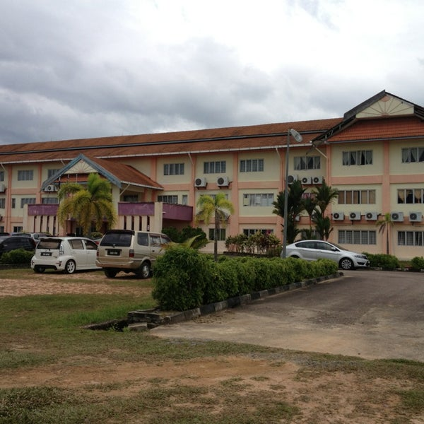
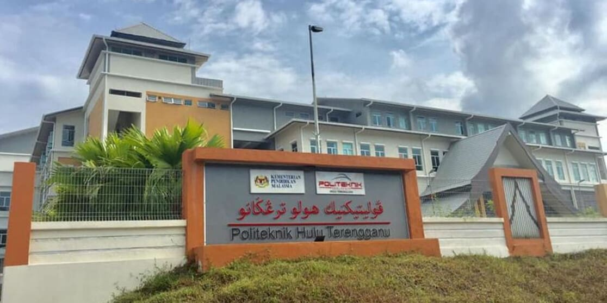
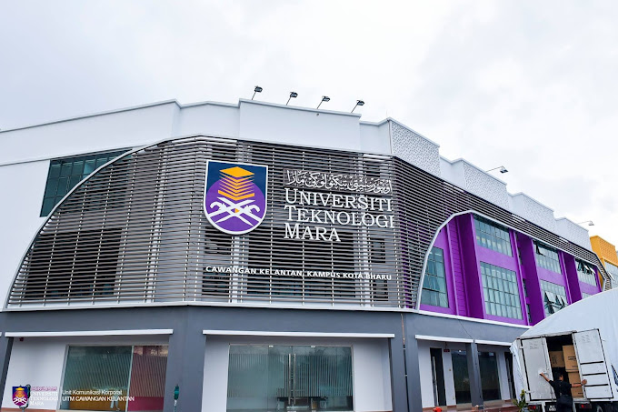

|
SEKOLAH KEBANGSAAN BATU 48
I start studying my primary school at sekolah kebangsaan batu 48.
when I started going to school here I felt very happy because it was the first time for me to go through school life.
Here I also studied the first third language which is Arabic. |
|
|  |
SEKOLAH MENENGAH KEBANGSAAN BALAI BESAR
For secondary school, i studying at sekolah kebangsaan balai besar.
I choose there because a lot of my friend go there and it close to my house.
|
|
|  |
POLITEKNIK HULU TERENGGANU
I start my university life at at politenik hulu terengganu.
There for the first time, I find myself living independently, away from my family members.
Other than that, there i also make a new friends which i still contact until today. |
|
|  |
UNIVERSITI TEKNOLOGI MARA
I continue pursue my study at universiti teknologi mara.
There course i choose is BA242 - Bachelor of Business Administration (Hons.) Finance.
Currently, i am part 4 finance student. |
|